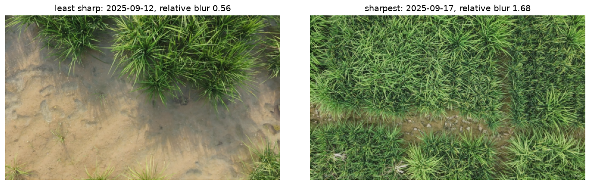
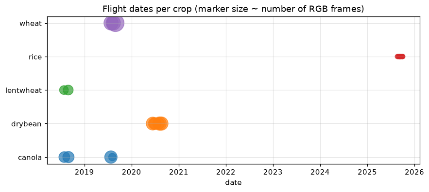

Most UAV data arrive as folders of plain PNG or JPG frames, not GeoTIFFs: no CRS, no transform, just pixels.
Overview
Before any index or model, three jobs come first: read the frames into a consistent array layout, throw out the bad ones (blur, over- or under-exposure), and know exactly what is in each folder. This notebook does all three with rs.uav.read_frame, rs.uav.load_pair, the quality-control helpers and rs.uav.build_catalog.
Core concepts
Learning objectives
Read PNG frames and RGB + NIR pairs into (band, y, x) xarray DataArrays.
Distinguish pixel coordinates from map coordinates and attach a GSD.
Check bit depth and value ranges.
Score frames for blur (variance of the Laplacian) and exposure, and select good frames.
Build a tidy catalogue (crop, date, band, rig, path) of a multi-date collection.
Real, teaching only (no licence, sensor or GSD on file)
Contents
Setup
What is inside a PNG frame?
Reading frames into xarray
RGB + NIR pairs
Quality control: blur and exposure
A tidy catalogue of the whole collection
Extracting frames from a flight video
Summary and exercises
Setup
Installation. This notebook needs installation option 5 (core, spatial analysis, spatial statistics, geostatistics and remote sensing): pip install "geolattice[remote-sensing]". See “Installation options” in the GeoLattice README.
Code
import warnings # control warning messageswarnings.filterwarnings("ignore") # hide library warningsfrom pathlib import Path # file pathsimport numpy as np # arraysimport pandas as pd # tablesimport matplotlib.pyplot as plt # figuresfrom PIL import Image # inspect raw image filesimport geolattice.rsense as rs # GeoLattice remote sensing (rs.uav = drone tools)plt.rcParams.update({"figure.dpi": 110}) # figure resolutionDATA = Path("../../../../Data/08_remote_sensing/08_04_uav") # data folder next to this notebookLUMS = DATA /"infrastructure-free-uav-phenotyping"# LUMS rice framesOUT = Path("outputs"); OUT.mkdir(exist_ok=True) # results written by the notebooks
What is inside a PNG frame?
Look at the file before reading it: size, colour mode and data type tell you the bit depth.
Code
files = {"LUMS rice RGB": sorted((LUMS /"2025-08-22").glob("*.png"))[0],"Canola RGB": DATA /"Canola dataset/canola_06082019/RGB/5.png","Canola NIR": DATA /"Canola dataset/canola_06082019/NIR/5.png",}rows = []for label, f in files.items():with Image.open(f) as im: a = np.asarray(im) rows.append({"file": label, "size (w x h)": im.size, "mode": im.mode, "dtype": a.dtype,"min": a.min(), "max": a.max(), "MB": round(f.stat().st_size /1e6, 2)})pd.DataFrame(rows)
file
size (w x h)
mode
dtype
min
max
MB
0
LUMS rice RGB
(3840, 2160)
RGB
uint8
0
255
15.10
1
Canola RGB
(1098, 797)
RGB
uint8
12
255
1.82
2
Canola NIR
(1099, 798)
RGB
uint8
39
255
1.76
All are 8-bit (uint8, 0-255). Note that the NIR file is stored as a 3-channel RGB PNG: the NIR camera’s single band was written to all three channels. load_pair collapses it with nir_channel="mean". Radiometric cameras (MicaSense, DJI P4M) instead write 12- or 16-bit TIFFs, where 255 is not the maximum.
Reading frames into xarray
rs.uav.read_frame returns a (band, y, x) DataArray scaled to 0-1, the same layout used for satellite imagery elsewhere in GeoLattice. Without a GSD the coordinates are pixel centres. With a GSD they are metres in a local, north-up frame whose origin is the top-left corner.
Code
f = files["LUMS rice RGB"]img_px = rs.uav.read_frame(f) # pixel coordinatesimg_m = rs.uav.read_frame(f, gsd=0.00185) # metre coordinates (1.85 mm/px)print(img_px.dims, img_px.shape, img_px.band.values, img_px.dtype)print("pixel x:", img_px.x.values[:3], "... metre x:", img_m.x.values[:3].round(5), "...")print("attributes:", img_m.attrs)
Converting between pixel (row, col) and map (x, y) coordinates uses an affine transform. For a frame read with a GSD it is a simple scale; rs.uav.pix_to_map and rs.uav.map_to_pix handle any transform, including real GeoTIFF orthomosaics.
Code
from affine import Affine # 2-D affine transforms (as used by rasterio)T = Affine(0.00185, 0, 0, 0, -0.00185, 0) # top-left origin, 1.85 mm pixels, y points upx, y = rs.uav.pix_to_map(T, np.array([0.5, 1919.5]), np.array([0.5, 1079.5])) # col, row of two pixelsprint("map x:", x.round(4), " map y:", y.round(4))col, row = rs.uav.map_to_pix(T, x, y)print("back to pixels: col", np.round(col, 2), " row", np.round(row, 2))
map x: [9.0000e-04 3.5511e+00] map y: [-9.0000e-04 -1.9971e+00]
back to pixels: col [5.0000e-01 1.9195e+03] row [5.0000e-01 1.0795e+03]
Large frames can be read downsized for previews and quality checks with max_dim; the GSD is adjusted to match.
The crop datasets were taken with two cameras side by side, so each frame has an RGB and a NIR file. rs.uav.load_pair stacks them as bands red, green, blue, nir, resizing NIR to the RGB grid. The cameras do not see exactly the same footprint; the false-colour composite and the edge overlay below show how far apart they are before co-registration (notebook 09_04_05 aligns them).
Where the red and green edges do not coincide (yellow only where they do), the NIR frame is offset from the RGB frame. Any index that mixes NIR with visible bands (NDVI, GNDVI) is wrong at those pixels until the pair is co-registered.
Quality control: blur and exposure
Blur. The variance of the Laplacian measures how much fine detail a frame holds: motion blur and defocus lower it. Exposure. The fractions of near-black and near-saturated pixels flag dark or blown-out frames. rs.uav.frame_quality computes both for many files at once.
Code
lums_files =sorted(LUMS.rglob("*.png"))q = rs.uav.frame_quality(lums_files, max_dim=1024)q["date"] = [Path(p).parent.name for p in q.path]print(len(q), "LUMS frames scored")q.drop(columns="path").describe().round(3)
A synthetic test shows what the blur score responds to: blurring the same frame step by step lowers it quickly. Note the last row, though: the score is a variance, so it scales with the square of image contrast, and halving the brightness quarters it. A dull, overcast flight therefore scores lower than a sunny one without being any less sharp.
Code
from scipy.ndimage import gaussian_filter, shift # blur and motion simulationbase = rs.uav.read_frame(lums_files[0], max_dim=1024)rgb = rs.uav.to_rgb_array(base)tests = {"original": rgb,"defocus sigma=1": gaussian_filter(rgb, (1, 1, 0)),"defocus sigma=3": gaussian_filter(rgb, (3, 3, 0)),"motion 8 px": np.mean([shift(rgb, (0, s, 0), order=0, mode="nearest") for s inrange(8)], axis=0),"darker x0.5": rgb *0.5}res = pd.DataFrame({k: {"blur": rs.uav.blur_score(v), **rs.uav.exposure_stats(v)} for k, v in tests.items()}).Tres.round(4)
blur
mean
std
dark_frac
saturated_frac
original
331.1176
0.4512
0.1236
0.0
0.0
defocus sigma=1
14.0087
0.4512
0.1037
0.0
0.0
defocus sigma=3
0.1349
0.4512
0.0898
0.0
0.0
motion 8 px
40.1220
0.4507
0.1017
0.0
0.0
darker x0.5
82.7794
0.2256
0.0618
0.0
0.0
Blur scores depend on scene content (a frame of bare soil is less detailed than one of dense canopy) and on illumination, so thresholds work best relative to the flight: keep frames above, say, half the median score of their own date.
Code
q["blur_rel"] = q.blur / q.groupby("date").blur.transform("median")q["keep"] = (q.blur_rel >=0.5) & (q.dark_frac <0.2) & (q.saturated_frac <0.05)print(q.keep.value_counts().to_string()) # the public LUMS frames were already hand-pickedworst = q.sort_values("blur_rel").iloc[0]; best = q.sort_values("blur_rel").iloc[-1]fig, axes = plt.subplots(1, 2, figsize=(12, 3.6))for ax, r, t in [(axes[0], worst, "least sharp"), (axes[1], best, "sharpest")]: im = rs.uav.to_rgb_array(rs.uav.read_frame(r.path, max_dim=1024)) ax.imshow(im[150:450, 300:800]); ax.axis("off") ax.set_title(f"{t}: {r.date}, relative blur {r.blur_rel:.2f}")plt.tight_layout(); plt.show()
keep
True 110

The same check on a random sample of crop RGB frames:
Code
cat = rs.uav.build_catalog(DATA) # every image under data/crop_rgb = cat[(cat.band =="RGB") &~cat.dataset.str.startswith("infra")]sample = crop_rgb.groupby("crop").sample(15, random_state=0) # 15 random frames per cropqc = rs.uav.frame_quality(sample.path.tolist(), max_dim=1100)qc = qc.merge(sample[["path", "crop", "session"]], on="path")qc.groupby("crop")[["blur", "mean", "dark_frac", "saturated_frac"]].median().round(3)
blur
mean
dark_frac
saturated_frac
crop
canola
89.165
0.342
0.0
0.0
drybean
47.137
0.554
0.0
0.0
lentwheat
36.698
0.442
0.0
0.0
wheat
67.320
0.359
0.0
0.0
A tidy catalogue of the whole collection
rs.uav.build_catalog walks the folder tree once and returns one row per image with dataset, crop, session, date, band, rig, frame, path. Dates are parsed from folder names in either YYYY-MM-DD or DDMMYYYY form. The LUMS folders carry only a date, so their crop is filled in by hand.
Some sessions were flown with two camera rigs (RGB-1/NIR-1 and RGB-2/NIR-2 in the Drybean set). Both rigs number their frames from 0, so pairs must be matched within a rig; rs.uav.pair_catalog does this using the rig column.
fig, ax = plt.subplots(figsize=(9, 3.6))for i, (crop, d) inenumerate(cat[cat.band =="RGB"].groupby("crop")): n = d.groupby("date").size() ax.scatter(n.index, np.full(len(n), i), s=np.sqrt(n.values) *12, alpha=0.7)ax.set_yticks(range(cat.crop.nunique())); ax.set_yticklabels(sorted(cat.crop.unique()))ax.set(title="Flight dates per crop (marker size ~ number of RGB frames)", xlabel="date")ax.grid(alpha=0.3); plt.show()cat.to_csv(OUT /"uav_catalog.csv", index=False)pairs.to_csv(OUT /"uav_pairs.csv", index=False)print("saved", OUT /"uav_catalog.csv", "and", OUT /"uav_pairs.csv")

saved outputs/uav_catalog.csv and outputs/uav_pairs.csv
Extracting frames from a flight video
LUMS recorded 4K video and kept every 6th frame. rs.uav.extract_frames does this and can drop blurred frames on the way. No video ships with the data, so the cell below makes a short clip that pans across one frame (with a few deliberately blurred frames) and then extracts from it.
Code
import cv2 # OpenCV video writingclip = OUT /"demo_flight.mp4"src = rs.uav.to_rgb_array(rs.uav.read_frame(lums_files[0]), uint8=True)h, w =360, 640vw = cv2.VideoWriter(str(clip), cv2.VideoWriter_fourcc(*"mp4v"), 24, (w, h))for i inrange(72): # 3 s at 24 fps, panning right x0 =20* i fr = cv2.resize(src[400:400+1080, x0:x0 +1920], (w, h), interpolation=cv2.INTER_AREA)if30<= i <42: # a gust: motion blur fr = cv2.blur(fr, (15, 1)) vw.write(cv2.cvtColor(fr, cv2.COLOR_RGB2BGR))vw.release()frames = rs.uav.extract_frames(clip, OUT /"demo_frames", step=6)print(len(frames), "frames kept of 72 (every 6th)")frames.round(3)
Read one Wheat pair with load_pair and make the colour-infrared composite. Is the offset between cameras larger or smaller than in Canola?
Run frame_quality on all frames of canola_06082019. Which frames would you drop with the relative-blur rule? Look at them.
Add a column doy (day of year) to the catalogue and plot frames per crop against doy. Which crops overlap in season?
extract_frames names files by frame index. Change the demo to keep every 12th frame and compute the ground spacing between kept frames for a 1 m/s flight.
References
Pech-Pacheco, J. L. et al. (2000). Diatom autofocusing in brightfield microscopy: a comparative study. ICPR 2000 (variance-of-Laplacian focus measure).
Chaudhry, H., Rana, S. and Jaleel, A. (2026). UAV-based crop reconstruction and trait estimation using RGB imagery without external geospatial infrastructure. Computers and Electronics in Agriculture (accepted).